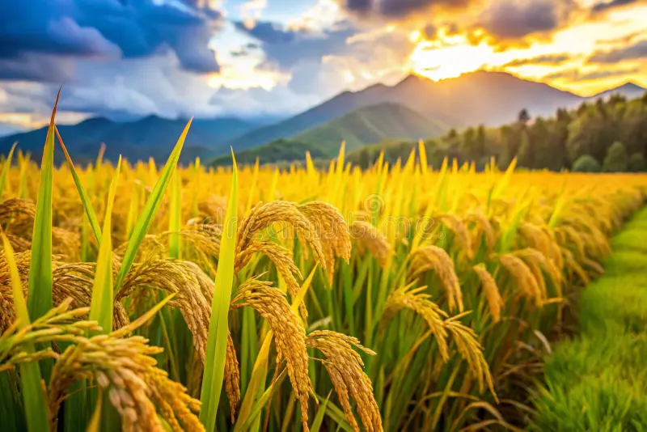

Sabores - Gastronomia y Tradicion
Saberes - Conocimiento Cientifico y Ancestral
Salud - Alimentacion y Bienestar
El arroz es uno de los cultivos más importantes de la economía agrícola de Córdoba, y aunque es un cereal y no una fruta, ocupa un lugar central en la gastronomía dulce y salada de la región del Sinú.
Es una planta gramínea de tallos delgados y espigas que agrupan numerosos granos pequeños. Estos granos, una vez procesados, se convierten en la base de múltiples preparaciones tradicionales, tanto dulces como saladas, en la cocina cotidiana y festiva de la región.
El arroz requiere suelos con buena disponibilidad de agua, por lo que suele cultivarse en zonas planas cercanas a fuentes hídricas o mediante sistemas de riego, condiciones presentes en varias áreas agrícolas de Córdoba.
Con el arroz se preparan numerosos dulces tradicionales como el arroz de leche, el arroz con coco, la arepa de arroz y otras preparaciones dulces típicas de las celebraciones familiares y comunitarias en la región del Sinú.
Se cultiva principalmente en zonas rurales con acceso a agua para riego, siendo un producto agrícola fundamental en la economía campesina de varios municipios de Córdoba.
El arroz aporta principalmente carbohidratos, siendo una fuente importante de energía. Según la preparación, también puede complementarse con otros ingredientes que aportan calcio, proteínas o grasas saludables, como en el caso del arroz con coco o el arroz de leche.
En Colombia el arroz se cosecha generalmente en dos ciclos al año, conocidos como semestre A y semestre B, dependiendo de las condiciones climáticas y de riego de cada zona productora.
El cultivo de arroz es una fuente importante de empleo e ingresos para numerosas familias campesinas de Córdoba, además de ser la base de la seguridad alimentaria en la región.
Como fuente principal de carbohidratos, el arroz aporta energía necesaria para las actividades diarias, y cuando se combina con otros ingredientes nutritivos en preparaciones dulces, puede complementar una alimentación balanceada.
El arroz y sus variedades de dulces forman parte esencial de la identidad gastronómica del Sinú, estando presentes en celebraciones familiares, fiestas patronales y encuentros comunitarios como símbolo de hospitalidad y tradición.